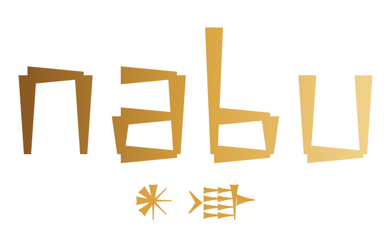

capture
Every session from Codex, Claude Code, and OpenCode, pressed to local clay — automatically, with nothing sent anywhere.

nabu is a local and comprehensive solution to the AI-agent memory problem, unifying memory across different tools.
It keeps a durable, cross-tool history of everything you do with Codex, Claude Code, and OpenCode, and serves it concisely over MCP, so your agents can find and recover context from previous sessions.
Information will not be lost due to compaction, session deletions or switching to a different agent.
Every session from Codex, Claude Code, and OpenCode, pressed to local clay — automatically, with nothing sent anywhere.
Search the whole archive across tools. Find the fix, the decision, the thread — long after the context window has dropped it.
Your agents read the archive themselves over MCP — recovering past work instead of re-deriving it from zero.